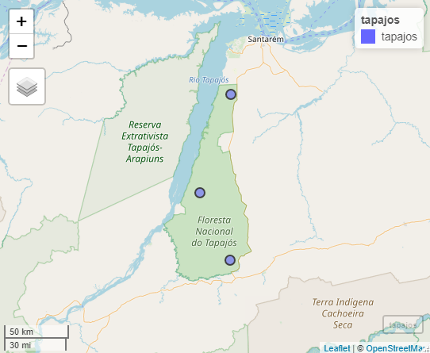

Introduction to chirps
Kauê de Sousa
Department of Agricultural Sciences, Inland Norway University, Hamar, Norway The Alliance of Bioversity International and CIAT, Montpellier, FranceAdam H. Sparks
Centre for Crop Health, University of Southern Queensland, Toowoomba, AustraliaAniruddha Ghosh
The Alliance of Bioversity International and CIAT, Nairobi, KenyaSource:
vignettes/Overview.Rmd
Overview.RmdSummary
The chirps package (de Sousa et al. 2020) provides functionalities for reproducible analysis using the CHIRPS (Funk et al. 2015) and CHIRTS data (Funk et al. 2019) . CHIRPS is a daily precipitation data set developed by the Climate Hazards Group for high resolution precipitation gridded data. Spanning 50°S - 50°N (and all longitudes) and ranging from 1981 to near-present (normally with a 45 day lag), CHIRPS incorporates 0.05 arc-degree resolution satellite imagery, and in-situ station data to create gridded precipitation time series for trend analysis and seasonal drought monitoring. CHIRTS is a quasi-global (60°S – 70°N), high-resolution data set of daily maximum and minimum temperatures.
Other functionalities of chirps are the computation of precipitation indices, the retrieval of the evaporative stress index (ESI) which describes temporal anomalies in evapotranspiration produced weekly at 0.25 arc-degree resolution for the entire globe, and the retrieval of IMERG data which provides near-real time global observations of rainfall at 0.5 arc-degree resolution.
CHIRPS (precipitation data)
The Tapajós National Forest is a protected area in the Brazilian Amazon. Located within the coordinates -55.4° and -54.8°E and -4.1° and -2.7°S with ~527,400 ha of multiple Amazonian ecosystems. We take three points within its area to get the precipitation from Jan-2013 to Dec-2018 using get_chirps().

For this example we fetch the data from the server “ClimateSERV” using the argument server = "ClimateSERV". This option is recommended when working with few data points as the request could be faster. The default server = "CHC" is used for multiple data points and years.
library("chirps")
library("sf")
data("tapajos", package = "chirps")
# sample three points within the Tapajos area
set.seed(1234)
tp_point <- st_sample(tapajos, 3)
# coerce as sf points
tp_point <- st_as_sf(tp_point)
dat <- get_chirps(tp_point,
dates = c("2013-01-01","2018-12-31"),
server = "ClimateSERV")
#> Fetching data from ClimateSERV
#> Getting your request...Precipitation indices
By default, the function get_chirps() returns a data.frame which inherits the classes ‘chirps’ and ‘chirps_df’, where each id represents the index for the rows in the in-putted ‘object’. It is possible to return the data as a matrix using the argument as.matrix = TRUE.
dat
#> id lon lat date chirps
#> <int> <dbl> <dbl> <date> <dbl>
#> 1: 1 -55.03 -3.80 2013-01-01 0.00
#> 2: 1 -55.03 -3.80 2013-01-02 12.36
#> 3: 1 -55.03 -3.80 2013-01-03 24.72
#> 4: 1 -55.03 -3.80 2013-01-04 0.00
#> 5: 1 -55.03 -3.80 2013-01-05 0.00
#> ---
#> 6569: 3 -55.03 -3.41 2018-12-27 0.00
#> 6570: 3 -55.03 -3.41 2018-12-28 0.00
#> 6571: 3 -55.03 -3.41 2018-12-29 0.00
#> 6572: 3 -55.03 -3.41 2018-12-30 0.00
#> 6573: 3 -55.03 -3.41 2018-12-31 0.00With precip_indices() is possible to assess how the precipitation changes across a time series using precipitation variability indices (Aguilar et al. 2005). Here, we take the indices for intervals of 15 days and compute the indices for the time series (from Jan-2013 to Dec-2018).
p_ind <- precip_indices(dat, timeseries = TRUE, intervals = 15)
p_ind
#> id date lon lat index value
#> <int> <date> <dbl> <dbl> <chr> <dbl>
#> 1: 1 2013-01-01 -55.03 -3.80 MLDS 7.00
#> 2: 1 2013-01-01 -55.03 -3.80 MLWS 2.00
#> 3: 1 2013-01-01 -55.03 -3.80 R10mm 1.00
#> 4: 1 2013-01-01 -55.03 -3.80 R20mm 3.00
#> 5: 1 2013-01-01 -55.03 -3.80 Rx1day 45.70
#> ---
#> 3446: 3 2018-12-16 -55.03 -3.41 Rx5day 53.90
#> 3447: 3 2018-12-16 -55.03 -3.41 R95p 34.53
#> 3448: 3 2018-12-16 -55.03 -3.41 R99p 34.53
#> 3449: 3 2018-12-16 -55.03 -3.41 Rtotal 80.49
#> 3450: 3 2018-12-16 -55.03 -3.41 SDII 13.42The function precip_indices() returns a data.frame with the precipitation indices. Each date corresponds to the first day in the time series intervals as defined by the argument ‘intervals’. When timeseries = FALSE the function returns a single precipitation index for the entire time series.
CHIRTS (temperature data)
Maximum and minimum temperature and relative humidity data are available with the function get_chirts(). Data is requested to the server CHC as default and is currently available from 1983 to 2016. We use the same random points from the Tapajós National Forest but for few days to speed up the call.
dates <- c("2010-12-15","2010-12-31")
temp1 <- get_chirts(tp_point, dates, var = "Tmax", as.matrix = TRUE)
temp2 <- get_chirts(tp_point, dates, var = "Tmin", as.matrix = TRUE)
rhu <- get_chirts(tp_point, dates, var = "RHum", as.matrix = TRUE)Going further
Evapotranspiration
The chirps package also retrieves the Evaporative Stress Index (ESI) using the function get_esi() which behaves similarly as get_chirps().
The function get_esi() may return NAs due to cloudiness in the dataset. Which will return an error message:
set.seed(123)
lonlat <- data.frame(lon = runif(1, -55, -54),
lat = runif(1, -3, -2.7))
get_esi(lonlat, c("2017-12-01","2018-01-20"))One way to deal with this is increase the buffer area around the in-putted object with the argument dist passed to st_buffer() from sf(Pebesma 2018) through the ... functionality in get_esi(). The argument nQuadSegs defines the number of segments per quadrant in the buffer.
Objects of class sf
To return an object with the same class (sf), the argument as.sf = TRUE is used.
get_chirps(tapajos, dates = c("2017-12-15","2017-12-31"), as.sf = TRUE)Objects of class geojson
get_chirps() and get_esi() also contains a method for objects of class geojson with geometries ‘Point’ and ‘Polygon’. To return an object with the same class (geojson), the argument as.geojson = TRUE is used.